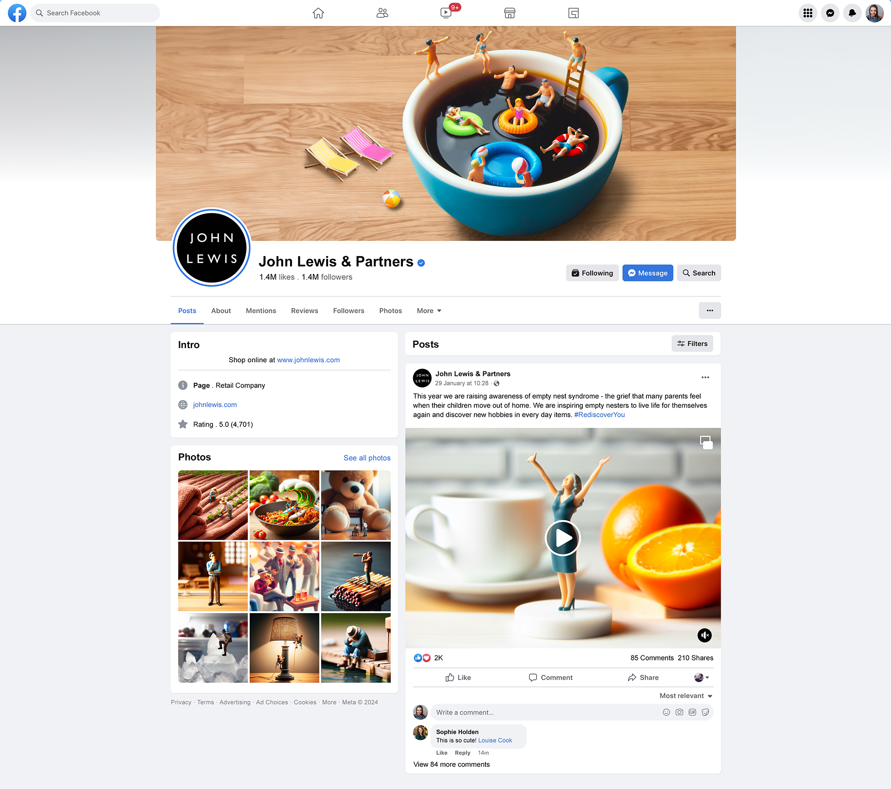
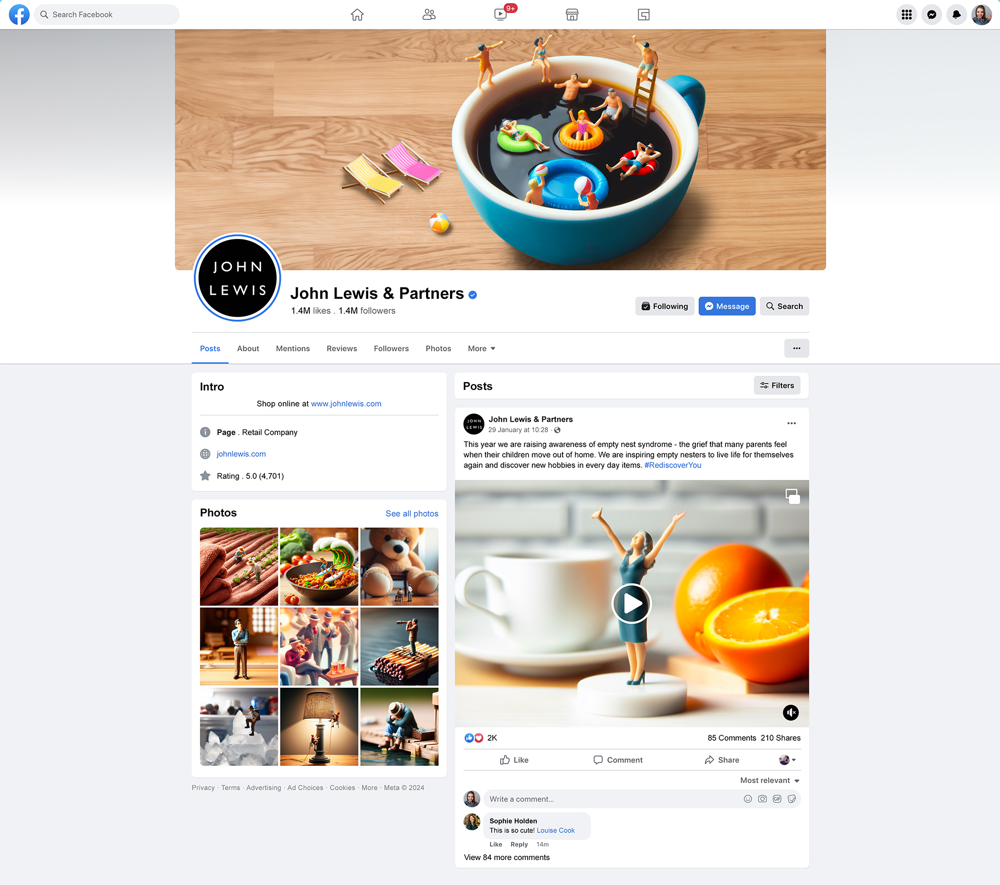

Rediscover You.
Working on a team with two others, we created the following campaign using miniature figures and AI generated art to conquer loneliness using John Lewis' tone of voice.
• 10s+ social animation
• 3x Printed posters
• 3x billboard posters
• 2x Staff uniform badges
• 2x social media mockups
• 3x Website Pages


 
